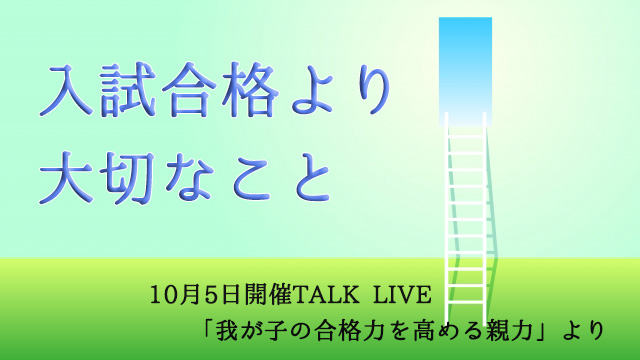
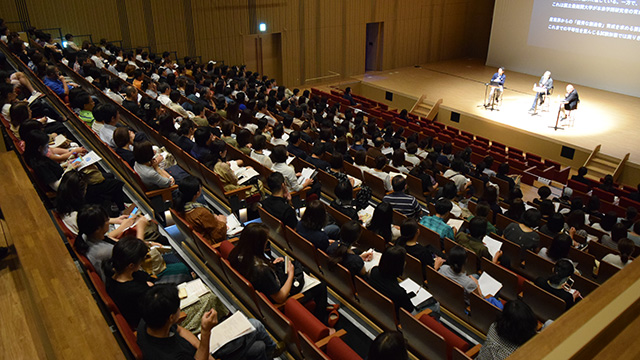
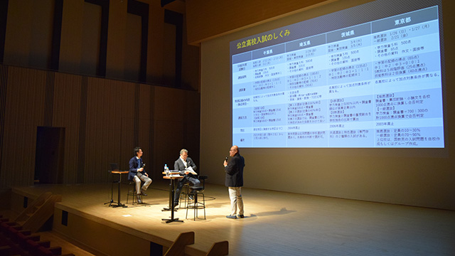
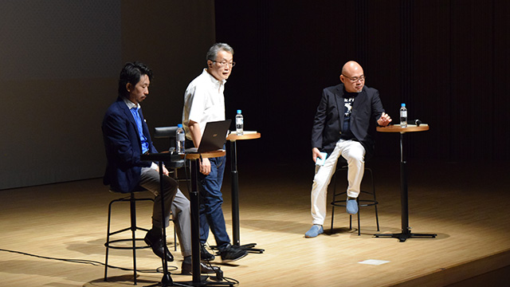

親にとって我が子の受験ほど気がかりなものはないかも知れない。私にも経験はあるが、やはり子どもの受験は精神的にも肉体的にも消耗は激しい。それでも我が子の人生がかかってると思うとできる限りのことはやってあげたいのが親心というものだ。
今回仲間3人で「我が子の合格力を高める親力」と題してトークライブを開催したが、会場に満員近い子を持つ親が参集したのも子どもの受験がいかに大きなイベントであるかを示していると思う。

TALK LIVEで会場を埋め尽くす保護者の皆様その第一が学校選びだ。多くの親は自分の子どもが少しでも有利な人生を歩むよう、つまり幸せを願って「良い学校」へ入れようと望む。だがそこに落とし穴がある。良い学校の基準が偏差値しかなかったりするからだ。後はせいぜい通わせている人からの評判くらい。
少し考えてみれば分かるが偏差値が高いイコール良い学校ではない。学校を選ぶ―評価する―物差しは色々ある。伝統、校風、学校の教育方針、先生たちの熱意や教育レベル（内容）の質、建物（校舎やグランド）設備や、何よりも高い教育内容を維持するための先進的取り組みを全校的に行う意欲。子どもとの相性―フィーリングが合うかどうか―も大切となる。あと、意外なところでは校長の人柄や指導力も我々からすると大きなポイントである。
しかしこれら全てを一般の人々が熟知することは不可能だ。たとえ学校の説明会などに行っても本当のこと―内部の事情―までは到底うかがい知れない。
むしろ学校が自分たちを宣伝する説明会などは行かないほうが良いくらいだ。
たとえば多くの高校が大学合格者数を自慢するが「数字のトリック」にダマされやすい。なぜなら私立大学の合格人数は延べ人数であって実数ではないからだ。
○○大学(有名大)合格50人といっても、1人の生徒が○○大学の複数学部に受かるのが普通なので、つまり1人で3学部受かると3人と発表するから実態は50割る3～4で12～17人くらいなのだ。100名合格なら実際の合格者は25～30人くらいと見当をつけなくてはならない。
このように学校が行う自校説明会は当てにならない。それどころか人の良い保護者は立派な教育方針を立て板に水で話す（話し方の上手な）担当者の説明を真に受けたりして失敗する。教育方針通りの教育が実践されているかどうかは入ってみなければ分からないからだ。説明会はあくまで学校の宣伝の場であって企業の行う販促イベントと同じということを忘れてはならない。
偏差値も大学進学率も説明会も当てにならないとしたらどうすれば良いのか。
だからこそ今回のトークライブで我々は、学校の反発（⁉）を承知の上で職業柄知り得た内部情報をできる限り公開したわけで―2時間という制約上少々つめ込みだったが―親の皆さんには一応の満足をいただけたのではないかと思う。

ここで「トーク」に参加していない親御さんのために１つだけヒントを与えるなら、先にも言った「フィーリング（相性）を大事に」と言いたい。
たとえば学校の説明会に行ったとしたら注目すべきは、先生方の説明でも配られる資料でもなく校舎内の雰囲気や先生方のふるまいが発する感覚的印象のほうだ。
そこに好ましい印象を持てるかどうか。
そしてできることなら説明会などの特別なイベントではなく、日常の学校の様子を見学することを勧めたい。校舎内に入れないなら校門から出てくる在籍生徒の様子を観察して欲しい。なるべく親子で見学するのがベター。生徒たちの様子や立居ふるまいで相当なことが分かる。自分に合うかどうか。言語化できないフィーリング（直観）こそが真実の情報だと考えて欲しい。
そういえば数年前私の息子が高校を決めるとき、色々な資料や情報さらに塾からの勧めもあって某私立高を母親と見学したことがあったが、息子は校門をくぐった瞬間「この学校はぜってえ嫌だ！」と言い出した。校舎のモニュメントやデザイン、生徒の制服の色や形状それらのセンスに激しい違和感を覚えたらしく、妻も同感した(笑)と言って帰ってきた。
その学校は通いやすくレベル的にも目標校としてふさわしかったので一応受験して合格はしたが行かなかった。偏差値的にはここよりやや低い都内の高校に進学したのである。
結果的に息子の選択は正しかったと思っている。部活や友人関係にも恵まれ充実した高校生活を送ったからだ。
フィーリングで決めるなんてと思うかも知れないがフィーリングこそ正しい選択法なのだ。私たちは言語でものを考える故、言語的情報にダマされやすい。論理的につじつまが合えば良しとする習性をもっているからだ。しかし直観はそれら論理（理屈）や整合性の網の目をくぐり抜けて、自分にとっての正しい道を直接的に教えてくれる。
だからなるべく予断を持たずに学校へ出向いてフィーリングそのものを感じ、自分に合うかどうか判断して欲しい。
いくら多くの有益（⁉）と思われる情報を仕入れたところで我が子に合わなければ何にもならないのではないか。
ということは、冒頭の「子どもの幸福を願って良い学校に入れる」という話は逆転しなければならない。良い学校とは偏差値が高いつまり有名大学に合格者が多いのではなく、子どもが通ってみて良かったと思える学校。
そこで学業のみならず良き友や良き先生と出会え、人間的にも成長できたと実感できるような場を与えてくれる学校。それこそが良い学校ではないか。
何か特定の「良い学校」というものが予め存在しているのではない。後で振り返ったとき結果として「良い学校生活だったな」と思えるなら、そういう機会を与えてくれた学校が本人にとっての良い学校なのだ。
それならよほどフィーリングが合わないというのでない限りどんな学校でも良いということになる。なぜならどんな学校にも良い友人や先生を見い出すことはできるからだ。それができるかどうかはある意味運と本人の心がけ次第だと思う。

だからどの学校へ行くかよりどんな学校生活を送るかが大事ということ。レッテルより実質が大事ということだ。
良い学校というより良い学校生活を送ることが結局は子どもの幸福につながることになる。
そう考えれば親は我が子を世間的に見栄えのする学校に押し込むことより、与えられた環境の中で最大限力を発揮し良き人間関係を作り上げ常に成長することの大切さを教えるほうが得策なのだ。そうすればどこへ行っても通用する人間になれる。
入試合格は親にとっても悲願である。それは分かる。しかしもっと大切なことはどんな学園生活を送るかであり、日頃から親子で話し合いそのイメージ（夢）を作り上げることだと思う。
受験合格はゴールではない。その後こそが大事ということ。これを忘れてはならない。親は、合格という入口より成長という出口のほうが大事だということを今一度認識して欲しい。